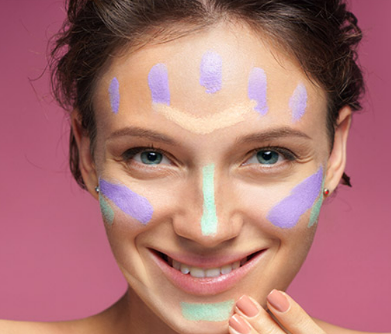
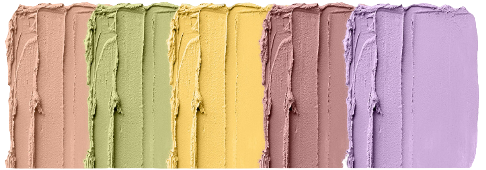

Como usar corretivo colorido na maquiagem da maneira certa
Quer conseguir uma make com pele perfeita de verdade? O segredo é saber como usar corretivo COLORIDO!

Por que usar corretivo colorido?
O corretivo colorido é o produto perfeito para cobrir imperfeições na pele. Esse produto
pode ser o seu melhor amigo na hora de elaborar uma pele incrível.
Enquanto os corretivos da cor da sua pele precisam ser usados em muitas camadas para camuflar
imperfeições
ou são ineficientes em neutralizar manchas bem escuras, os corretivos coloridos se encarregam de todo o
trabalho
dando um efeito natural e um acabamento perfeito à pele.

Corretivo Laranja
O corretivo laranja é perfeito para camuflar a aparência azulada das olheiras, principalmente
aquelas com veias e vasinhos mais visíveis. Essa cor também é ótima para neutralizar tons acizentados
da pele negra.
Corretivo Verde
Para quem quer esconder marcas de acne e espipnhas, o corretivo mais indicado é o na cor verde.
Esse corretivo neutraliza a vermelhidão causada pela inflamação da pele acneica e com rosáceas,
camuflando marcas e manchas, deixando a pele com aspecto uniforme.
Corretivo Amarelo
O corretivo amarelo é outra opção para disfarçar olheiras, principalmente as arroxeadas.
Corretivo nessa cor também é ótimo para camuflar hematomas.
Corretivo Vermelho
Essa é a cor de corretivo ideal para peles negras. Além disso, ele dá pigmentação às peles com vitiligo,
disfarçando as áreas sem coloração.
Corretivo Lilás
O corretivo nessa cor esconde manchas marrons, como sardas e até melasmas.
Além de camuflar hematomas esverdeados.
___________________________________________________________________
✔ Agora que você aprendeu como usar corretivo colorido, invista nos melhores produtos para fazer a pele perfeita!